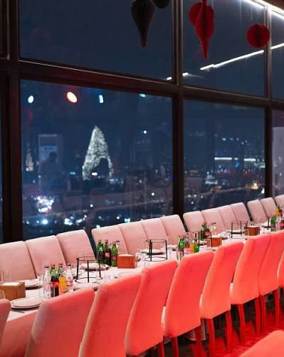
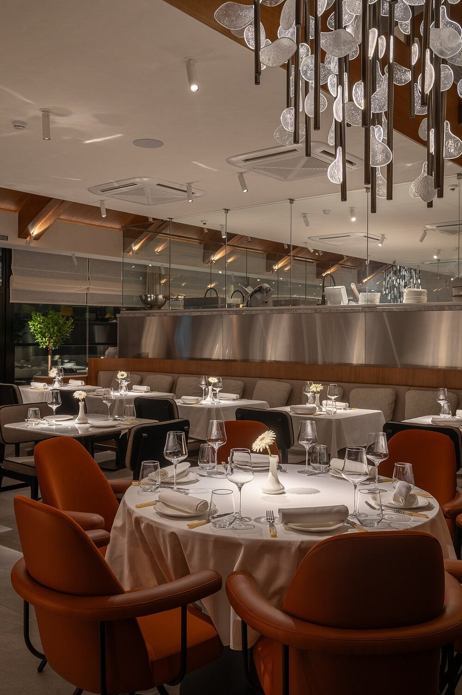
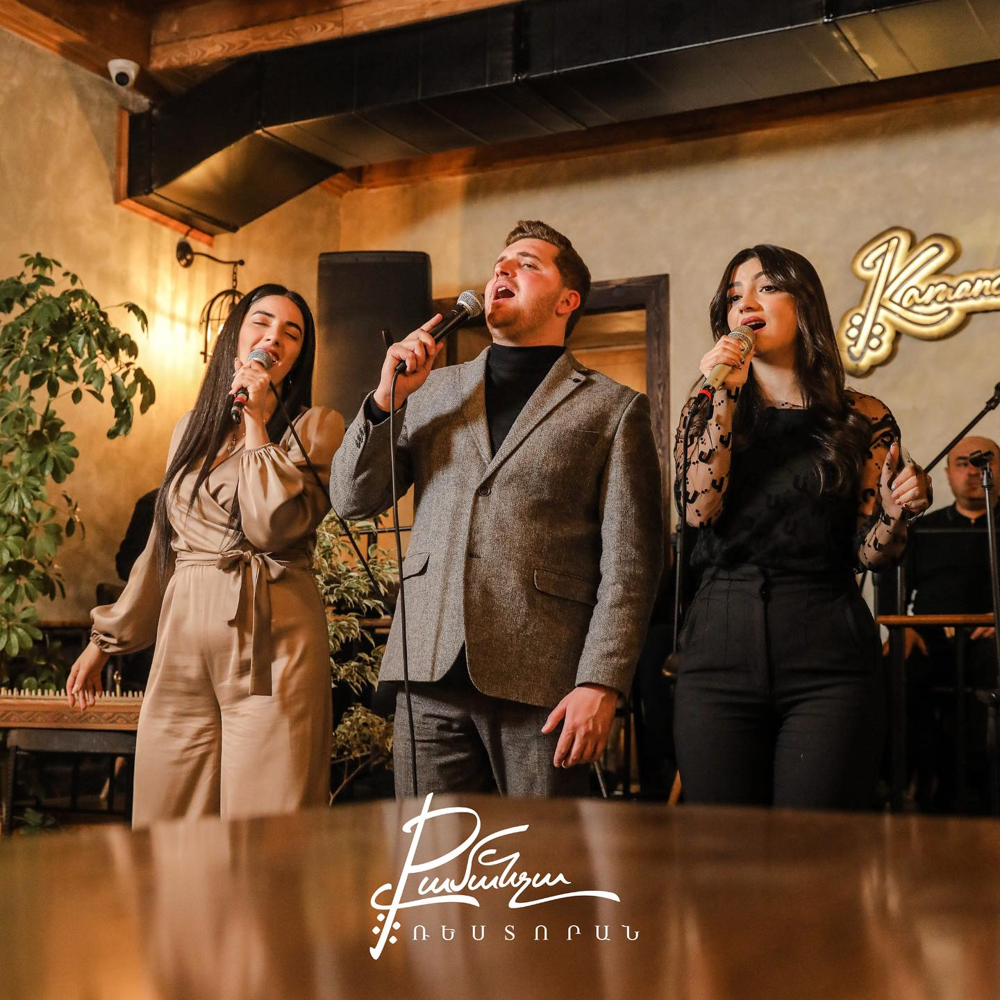

On August 13, AMAR welcomes IBIZA RECORDS for a night inspired by
the legendary sound and energy of Ibiza. Expect carefully curated
electronic music, an unforgettable atmosphere, signature cocktails,
exceptional cuisine, and a summer night you’ll want to relive. Free
Entry Reserve your table in advance: Another unforgettable night is
on the way. Join us on July 23 as @alextwinofficial brings the
soundtrack to an evening filled with music, energy, and the
signature AMAR atmosphere. Reserve your table today. At AMAR, every
cocktail begins with passion 🍸 Our bar is stocked with a carefully
selected collection of premium spirits, signature ingredients, and
endless creativity. Behind every drink is a team of bartenders
dedicated to their craft, constantly refining every detail to
deliver an exceptional experience. Because great cocktails are not
just made - they are created. See less This Friday, AMAR is calling…
🌴 Join us for a special night with @cj_jeff_ , great music,
signature atmosphere, and unforgettable energy. Reserve your table
in advance and spend the evening with us

Event Mechanics and TimingSchedule: Starts at the top of every hour
and lasts for 10 minutes.Tranquil Mutation: A blue light travels
from the Zen Channeller to your garden, mutating random fruits and
giving them a mist-like aura with increased value.Chi Currency: Feed
mutated tranquil fruits to the Zen Shop or Zen Channeller to grow
the community tree and unlock event-exclusive gear.Rewards and
ItemsZen Tree: Leveling up the tree grants special prizes like Zen
eggs and seed packs.Exclusive Plants:If you need help finding the
Zen Shop.Zen Restaurant is a vibrant lounge bar, restaurant, and
event venue located at 62/11 Garegin Hovsepyan Street in the
Nork-Marash district of Yerevan. It features artisanal cocktails, a
mix of European and Armenian dishes, an outdoor pool area, and
energetic nightlife enter tainment with live music and themed
shows.Atmosphere and EntertainmentVibe: Neon-lit, high-energy lounge
setting with panoramic views and a summer terraceShows: Nightly DJ
sets, live darbuka rhythms, and afro shows; weekend Arabic shows on
Fridays and SaturdaysAmenities:

Location and HoursAddress: 41 Isaakyan Street, Yerevan (at the
Poplavok pond)Hours: Daily from 11:00 to 00:00Contact for bookings:
+374 95 997797 (available via phone or WhatsApp)Current
OfferingsSummer Terrace: Open daily overlooking the water with
seasonal menu updates.Menu Highlights: Contemporary Italian dishes,
handmade pasta and pizza prepared in a central open kitchen, and
signature drinks like the Loona Star cocktail.If you are looking for
a specific event date, a table reservation, or details on private
parties, let me know so I can help further.Join us for an
unforgettable evening at Loona, where exceptional cuisine, signature
cocktails, and vibrant music come together in a stylish atmosphere.
Enjoy a live DJ performance, a carefully curated menu, and the
perfect setting to celebrate with friends or simply unwind after a
long day.hether you're looking for great food, refreshing drinks, or
an elegant night out, Loona Summer Nights promises an experience
filled with energy, flavor, and unforgettable moments.

The Kamancha (also spelled Kamantcheh or Kamancheh) is one of the
oldest bowed string instruments in the Middle East and the Caucasus.
It has been played for more than 1,000 years and is admired for its
expressive, emotional sound. The instrument is an important part of
the musical traditions of Armenia, Iran, Azerbaijan, and neighboring
regions, where it is used in folk, classical, and ceremonial music.
History The Kamancha has ancient origins and has evolved over many
centuries. Traditionally, it had three strings, but most modern
versions have four. The instrument has been used to accompany
singers, poets, and storytellers, making it an essential part of
cultural life. Its music has been performed at weddings, festivals,
religious celebrations, and royal courts. Structure of the
Instrument The Kamancha consists of: A round wooden body covered
with a thin membrane. A long neck with tuning pegs. Four strings
stretched from the neck to the base. A bow made with horsehair.
metal spike at the bottom that rests on the floor while playing.